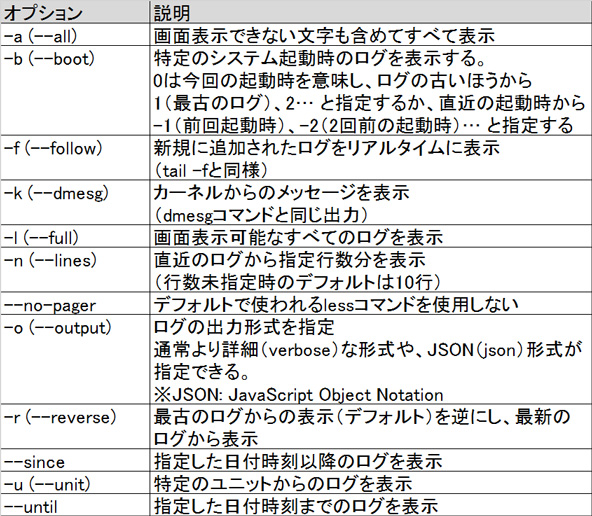
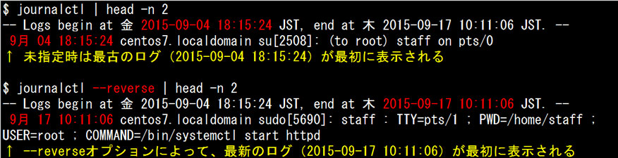
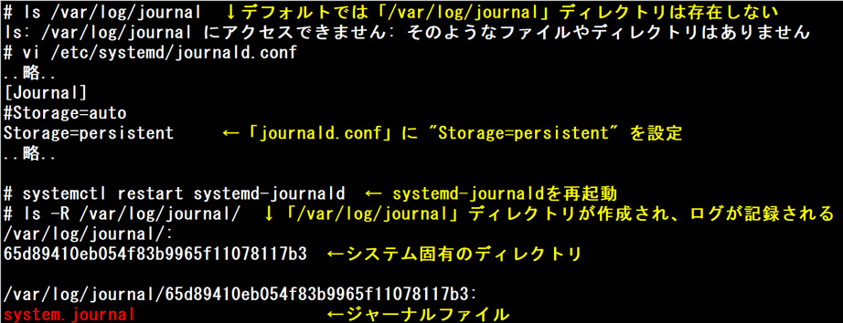
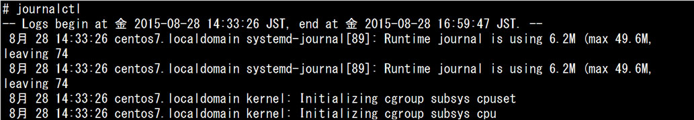
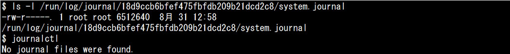
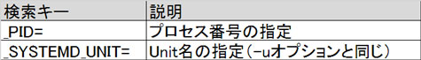
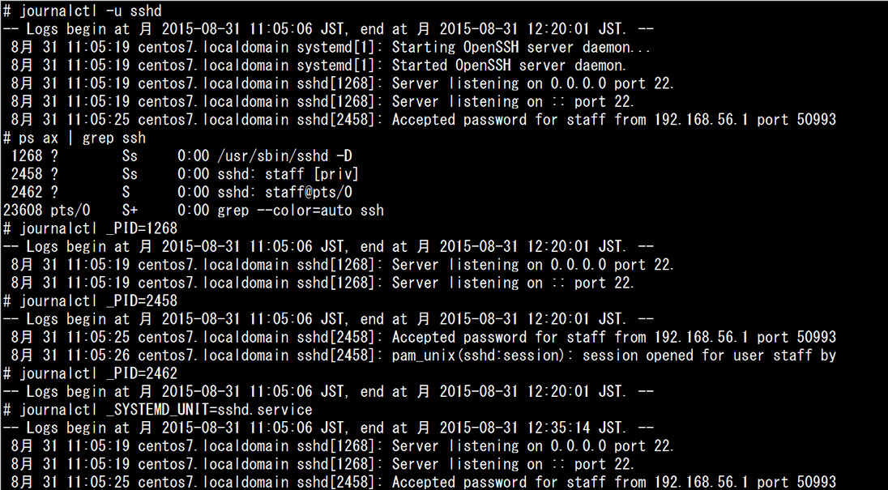
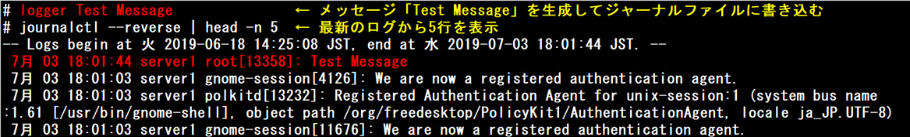
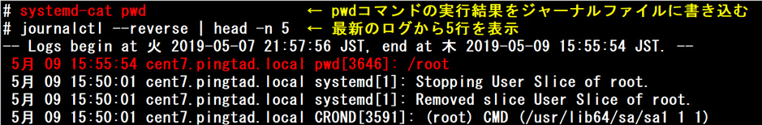

- 問題ID : 15660 システムのログ
- 履歴
正解
journalctl --reverse
解説
systemdの動作するシステムではsystemd-journaldデーモンを動作させ、ログの一元管理を行います。systemd-journaldはsystemdから起動したプロセスの標準出力やsyslogへのログメッセージをバイナリ形式で記録します。
systemd-journaldが書き込むログファイルはバイナリ形式のため、catコマンドなどで中を表示することが出来ません。systemd-journaldのログを表示するには journalctl コマンドを使用します。
journalctl コマンドの書式は以下のとおりです。
journalctl [オプション] [検索文字列]

上表より正解は
・journalctl --reverse
です。
以下は実行例です。

その他の選択肢については以下の通りです。
・journalctl
オプションなしでの実行時は古いものから表示されるため、誤りです。
・journalctl --newest
・journalctl --old-last
・journalctl --backward
存在しないオプションのため、誤りです。
参考
systemd
の動作するシステムではsystemd-journaldデーモンを動作させ、ログの一元管理を行います。systemd-journaldは
systemdから起動したプロセスの標準出力やsyslogへのログメッセージをバイナリ形式で記録します。また、syslogの規格にも対応してお
り、同じファシリティ（ログの送信元）やプライオリティ（監視レベル）が指定できます。
通常 syslog は、ログメッセージを
/dev/log に書き込み、syslogデーモン（syslogdなど）が /dev/log
から読み出すことでログメッセージの送受信を行っています。systemd-journald は /dev/log と
syslogデーモンの間に入り、syslogデーモンより先にsyslogのログメッセージを読み出します。そのため、systemd-
journaldとsyslogdが同時に稼働しているシステムでは、syslogdがsystemd-journaldからsyslogを読み出すよう
に設定する必要があります。旧来のsyslogに代わるrsyslog（reliable-syslog）やsyslog-ng（syslog
next-generation）では、設定せずにsystemd-journaldから読み出せます。
sytemd-journald
の設定は「/etc/systemd/journald.conf」で行います。デフォルトの設定では、バイナリ形式のログは「/run/log
/journal」配下にシステム固有のディレクトリを作成し、その中の「system.journal」というジャーナルファイルに記録します。システ
ム固有のディレクトリ名は、インストール時に実行された systemd-machine-id-setup
コマンドにより「/etc/machine-id」に記録されたものを使用します。
しかし「/run」ディレクトリはメモリ上に作成されたファイルシステム上のディレクトリのため、再起動するとデータが消えてしまいます。そのため、前回起動中に記録されたログは参照できなくなります。
ロ
グが再起動によってクリアされないようにするには、「/etc/systemd/journald.conf」でジャーナルファイルの保存先を制御する設
定項目「Storage=persistent」を設定します。この設定により、systemd-journaldは「/var/log
/journal」ディレクトリを作成し、その配下にログを記録するようになります。

デフォルトの設定は「Storage=auto」です。この場合、以下のように動作します。
・「/var/log/journal」ディレクトリが存在しない場合（デフォルト）...メモリ上の「/run/log/journal」配下に記録される
・「/var/log/journal」ディレクトリが存在する場合...「/var/log/journal」ディレクトリ配下に記録される
systemd-journaldが書き込むジャーナルファイルはバイナリ形式のため、catコマンドなどで中を表示することが出来ません。systemd-journaldのログを表示するには journalctl コマンドを使用します。
journalctl コマンドの書式は以下のとおりです。
journalctl [オプション] [検索文字列]
実行例）

なお、system.journalファイルの読み込み権限がないとログは表示されません。

検索条件指定の代表的なものは以下のとおりです。

実行例）

loggerコマンドで生成したログメッセージをジャーナルファイルに書き込むことができます。
書式：logger [オプション] [メッセージ]
実行例）

また、loggerコマンドと同様に、systemd-catコマンドで指定したコマンドの実行結果をジャーナルファイルに書き込むことができます。
書式：systemd-cat コマンド
実行例）
